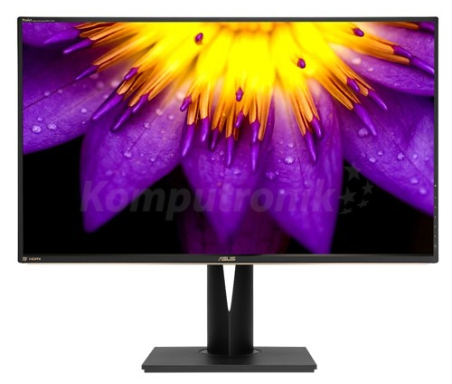
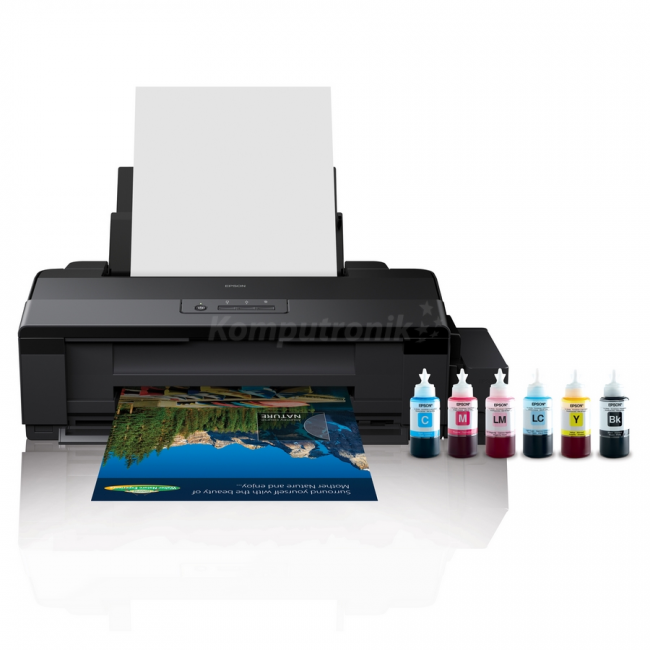

a)Monitor

Monitor komputerowy – ogólna nazwa jednego z urz¹dzeñ wyjœcia do bezpoœredniej komunikacji u¿ytkownika z komputerem. Zadaniem monitora jest natychmiastowa wizualizacja wyników dzia³ania programów uruchomionych na komputerze.
Obecnie u¿ywane monitory to ekrany komputerowe, obs³ugiwane przez komputer zwykle za poœrednictwem karty graficznej, która jest elementem komputera b¹dŸ mo¿e byæ wbudowana w sam monitor.
"https://pl.wikipedia.org/wiki/Monitor_komputera"
-
Producent--Asus
Gwarancja--3 lata w serwisie zewnêtrznym
przeznaczenie--profesjonalne
przek¹tna--32 cali
typ matrycy--matowa
rodzaj matrycy--IPS
rodzaj podœwietlenia--LED
rozdzielczoϾ nominalna--3840 x 2160 (4K Ultra HD) piksele
g³oœniki--tak
obrotowy ekran [pivot]--tak
b)Dkrukarka

Drukarka – urz¹dzenie wspó³pracuj¹ce z komputerem oraz innymi urz¹dzeniami, s³u¿¹ce do przenoszenia danego tekstu, obrazu na ró¿ne noœniki druku (papier, folia, p³ótno itp.). Niektóre drukarki potrafi¹ równie¿ pracowaæ bez komputera, np. drukowaæ zdjêcia wykonane cyfrowym aparatem fotograficznym (po pod³¹czeniu go do drukarki lub po w³o¿eniu karty pamiêci z zapisanymi zdjêciami do wbudowanego w drukarkê slotu).
"https://pl.wikipedia.org/wiki/Drukarka"
-
Producent--Epson
Gwarancja--1 rok w serwisie zewnêtrznym
technologia druku--atramentowa
maks. rozmiar noœnika--A3+
druk Photo--tak
rozdzielczoϾ druku w kolorze--5760 x 1440 dpi
maks. szybkoϾ druku mono--15 str./min.
maks. szybkoϾ druku kolor--5.5 str./min.
pojemnoϾ podajnika papieru--100 szt.
interfejs--USB 2.0
c)G³oœnik

Pamiêæ flash (ang. flash memory) – rodzaj trwa³ej pamiêci komputerowej, stanowi¹cej rozwiniêcie konstrukcyjne i kontynuacjê pamiêci typu EEPROM
"https://pl.wikipedia.org/wiki/Drukarka"
-
Producent--Harman Kardon
Gwarancja--1 rok w serwisie zewnêtrznym
typ urz¹dzenia--zestaw 2.1
typ komunikacji--bezprzewodowa
iloœc g³oœników--3 szt.
iloœc g³oœników satelitarnych--2 szt.
g³oœnik niskotonowy [subwoofer]--tak
regulacja g³oœnoœci--tak
wyjœcie s³uchawkowe--tak